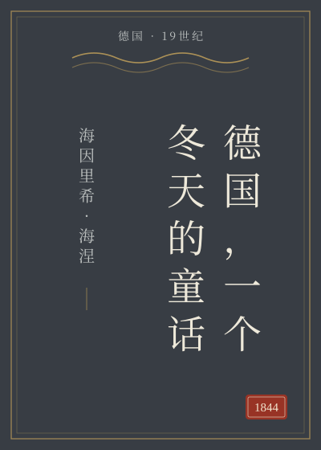
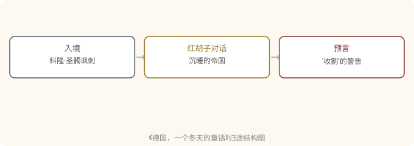

德国，一个冬天的童话
一、基本信息
| 作者 | 海涅 |
|---|---|
| 成书/出版 | 1844年出版（汉堡遭禁——通说待核） Heinrich Heine — Encyclopaedia Britannica（百科全书） |
| 国别/地区 | 德国 |
| 时代 | 近代 · 19世纪 |
| 体裁 | 长篇讽刺叙事诗 |
| 语言 | 德语 |

《德国，一个冬天的童话》归途结构图（主题·结构图）
二、创作背景
写作缘起：1843年海涅从巴黎返乡探母——沿途所见'分裂的三十六邦'德国——以'冬天的童话'讽刺（通说待核）。
出版：1844年汉堡出版即遭普鲁士与奥地利禁（通说待核）。
三、内容脉络
归途：科隆—红胡子大帝传说（'皇帝在山里睡着了'的传说——通说）；科隆大教堂的三王圣髑讽刺（通说）。
红胡子大帝对话：'如果他醒来，我们会怎样'——海涅的'告别浪漫'（通说）。
结局：'德国人向上帝祈祷，我会向魔鬼祈祷'式的讽刺与'行吟诗人的预言'：'伪善的老世界……总会有人来收割'（结尾原文意，通说待核——'红胡子'预言）。
四、主要人物表
| 人物 | 身份 | 说明 |
|---|---|---|
| '我'（诗人） | 流亡诗人 | '在德国走了一遭'的讽刺之眼 |
| 红胡子大帝 | 传说皇帝 | '沉睡的帝国'象征 |
五、主题与艺术特点
- 对分裂德国的讽刺（通说）。
- 浪漫主义传统的自我清算（通说）。
- 艺术特点：长诗以讽刺对白+叙事推进（通说）。
六、影响与评论
- Britannica（Heine 条）：Germany, a Winter's Tale (1844) — political satire。
Heinrich Heine — Encyclopaedia Britannica（百科全书） - 马克思推许（《西里西亚织工之歌》并评——通说待核）。
Heinrich Heine — Encyclopaedia Britannica（百科全书）
七、阅读建议
难点
- 19世纪德意志邦国分裂背景（维也纳体系）——注释。
- 讽刺的互文（红胡子传说、《尼伯龙根之歌》）——注释。
- 钱春绮译《德国，一个冬天的童话》（人民文学/上海译文，通说待核）。
- 英译：T.G. Karns（通说待核）。
通读（长诗可分段）→ 精读'红胡子对话'与结尾'预言' → 对照《诗歌集》。
八、待核实
- 1844年汉堡 Campe 出版与禁售细节待核。
- 钱春绮译本信息待核。
- 结尾预言原文逐字核对。
本页主要来源
海涅的其他收录作品：德国，一个冬天的童话